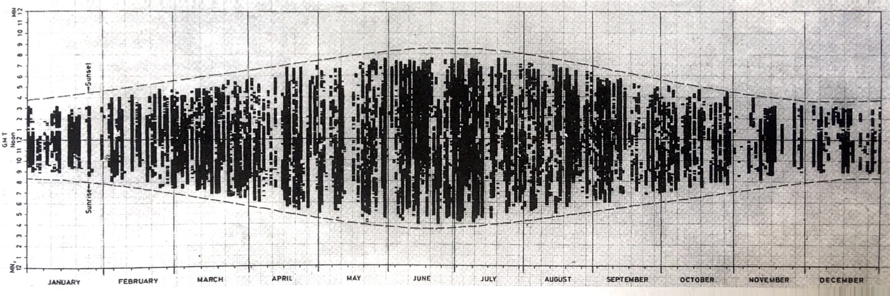

This code have been lightly revised to make sure it works as of 2018-12-16.
Hello again! I this mini-series (of in-determined length) will I try as best as I can to recreate great visualizations in tidyverse. The recreation may be exact in terms of data, or using data of a similar style.
The goal - An annual sunshine record report
I have recently read The Visual Display of Quantitative Information by Edward R Tufte, which I highly recommend. In the book the following chart was displayed which showed the sunshine record for each day day of the year.

F.J. Monkhouse and H.R. Wilkinson, Maps and Diagrams (London, third edition 1971), 242-243.
The goal for the rest of this post is to create something similar. Since we don’t have direct access to the data, we will scrape some data for ourselves. All code will be shown together in the end of the post and in this gist
R packages
First we need some packages
library(rvest)
## Warning: package 'xml2' was built under R version 3.6.2
library(tidyverse)
## Warning: package 'tibble' was built under R version 3.6.2
library(lubridate)
library(glue)
library(ehlib) # devtools::install_github("EmilHvitfeldt/ehlib")
The last package is my personal R package ehlib where I store some frequently used functions. If you do not wish to install/load this package just run the following code:
str_between <- function(string, start, end) {
stringr::str_extract(string,
stringr::str_c(start, '(.*?)', end, collapse = '')) %>%
stringr::str_replace(start, "") %>%
stringr::str_replace(end, "")
}
str_before <- function(string, pattern) {
stringr::str_extract(string, stringr::str_c(".+?(?=", pattern, ")"))
}
Data collection
So for this production we need, Weather information. But more specifically we need information about if the sun is shining for various times during the day, preferable for all days of the year. In addition sunrise and sunset times is also needed.
We will be scraping weather history from wunderground. On the button of the page https://www.wunderground.com/history/airport/KCQT/2018/1/1/DailyHistory.html we locate a table with “Time” and “Conditions”. Furthermore both sunrise and sunset times are present on the page.
For the website we need an airport code, year, month and day. Airport codes will have to be found manually by browsing the website. For a vector of all the days in a given year we use the following function that uses
all_dates_in <- function(year) {
if(ymd(glue::glue("{year}0101")) > as.Date(Sys.time())) {
stop("Please select a past or current year.")
}
start <- ymd(glue::glue("{year}0101"))
if(as.Date(Sys.time()) > ymd(glue::glue("{year}1231"))) {
end <- ymd(glue::glue("{year}1231"))
} else {
end <- as.Date(Sys.time())
}
seq(start, end, by = "day")
}
this function will work even if you pick a year that have not ended yet. As 2017 have just ended I though it would be appropriate to look back on that year.
year <- 2017
dates <- all_dates_in(year)
head(dates)
## [1] "2017-01-01" "2017-01-02" "2017-01-03" "2017-01-04" "2017-01-05"
## [6] "2017-01-06"
next we have a little function that creates a url from the airport code and the date. For safety we will wrap that function in purrr::safely.
weather_data_html <- function(date, code) {
url <- str_c("https://www.wunderground.com/history/airport/", code, "/",
year(date), "/", month(date), "/", mday(date), "/DailyHistory.html")
html_url <- read_html(url)
}
weather_data_html <- purrr::safely(weather_data_html)
For this code-though will we be using airport code KCQT, which is placed in Los Angeles Downtown, CA.
We add some ‘crawl-delay’ of 5 seconds and let it run. Please remember that this will take over 30 minutes to run with a delay in place but we do it to be nice.
airport_code <- "KCQT"
full_data <- map(dates, ~{
weather_data_html(.x, airport_code)
Sys.sleep(5)
cat(month(.x), "/", mday(.x), "\n", sep = "")
})
We can check whether all of the links went though.
map_lgl(full_data, ~ is.null(.x$error))
Data wrangling
Since we will be working with times quite a lot in the section we will use the lubridate package quite some time. In addition to that package I have devised this following function to turn something of the form “2:51 PM” into the number of minutes after midnight.
ampm_minutes <- function(x) {
as.numeric(str_between(x, ":", " ")) +
as.numeric(str_replace(str_before(x, ":"), "12", "0")) * 60 +
60 * 12 * str_detect(x, "PM")
}
Next we have the main wrangling function that takes the input, extracts the sunrise, sunset times and add them to the table that is also extracted.
data_wrangling <- function(html_url, date) {
# Sun rise time
sun_rise <- html_url %>%
html_nodes('div[id="astronomy-mod"] table') %>%
html_text() %>%
.[1] %>%
str_between("Time\n\t\t", "\n\t\t")
# Sun set time
sun_set <- html_url %>%
html_nodes('div[id="astronomy-mod"] table') %>%
html_text() %>%
.[1] %>%
str_between("\n\t\t", "\n\t\tCivil")
# Table
table <- html_url %>%
html_nodes('table[id="obsTable"]') %>%
html_table() %>%
.[[1]]
# Time column standardization
is_daylight <- any("Time (PDT)" == names(table),
"Time (MDT)" == names(table),
"Time (CDT)" == names(table),
"Time (EDT)" == names(table))
time_names <- str_c("Time", c(" (PDT)", " (MDT)", " (CDT)", " (EDT)",
" (PST)", " (MST)", " (CST)", " (EST)"))
names(table) <- if_else(names(table) %in% time_names,
"Time",
names(table))
table %>%
mutate(sun_set = sun_set,
sun_rise = sun_rise,
date = date,
yday = yday(date),
day_minutes = ampm_minutes(Time) - is_daylight * 60,
set_minutes = ampm_minutes(sun_set) - is_daylight * 60,
rise_minutes = ampm_minutes(sun_rise) - is_daylight * 60,
sun_up = day_minutes > (rise_minutes + 90) &
day_minutes < (set_minutes - 30))
}
In this function we arbitrarily decide that the sun is up, if it is 90 minutes after sun rise and 30 minutes before sun set. This is done because out future visualization is being made with rectangles and the lag function, and to ensure that all the sunshine hours are within sun set and sun rise we have to put in some restrains.
It seems that the 30th of October doesn’t have hourly history data available so we will exclude it in the following:
full_data2 <- map2_df(full_data[-303], dates[-303], ~ .x$result %>%
data_wrangling(.y))
At this point it would be wise to save our data.
save(full_data2, file = glue("{airport_code}-{year}.Rdata"))
Plotting data
Now that we have all the data we need it is time to turn our heads to ggplot2. But before we do that lets create some axis breaks that we will need.
x_axis <- dates %>% month() %>% table() %>% cumsum()
names(x_axis) <- month.abb[1:12]
y_axis <- 1:24 * 60
names(y_axis) <- str_c(c(12, rep(1:12, 2, length.out = 23)),
rep(c("AM", "PM"), each = 12))
So we start by creating a new condition for “Clear”, creating a new day_minutes variable to act as the other side for our sunshine rectangles and lastly remove all the observations where the sun isn’t up. Using geom_rect() to create all the little rectangles and geom_line()’s to show the sun set and sun rise, we lastly fiddle a little with the theme giving us the final result:
full_data2 %>%
mutate(con = Conditions == "Clear",
day_minutes2 = lag(day_minutes)) %>%
filter(sun_up) %>%
ggplot(aes(fill = con)) +
geom_rect(aes(xmin = yday, xmax = yday + 1,
ymin = day_minutes, ymax = day_minutes2)) +
geom_line(aes(yday, set_minutes)) +
geom_line(aes(yday, rise_minutes)) +
scale_fill_manual(values = c("grey40", NA)) +
theme_minimal() +
guides(fill = "none") +
theme(
panel.grid.major.y = element_blank(),
panel.grid.minor.y = element_blank(),
panel.grid.minor.x = element_blank(),
axis.text.x.bottom = element_text(hjust = 1.7)
) +
scale_x_continuous(breaks = x_axis, position = "right") +
scale_y_continuous(breaks = y_axis, limits = c(0, 24 * 60)) +
labs(x = NULL, y = NULL, title = "Sunshine report of Los Angeles 2017")
## Warning: Position guide is perpendicular to the intended axis. Did you mean to
## specify a different guide `position`?
## Warning: guide_axis(): Discarding guide on merge. Do you have more than one
## guide with the same position?
## Warning: guide_axis(): Discarding guide on merge. Do you have more than one
## guide with the same position?
## Warning: guide_axis(): Discarding guide on merge. Do you have more than one
## guide with the same position?
## Warning: guide_axis(): Discarding guide on merge. Do you have more than one
## guide with the same position?

Code
library(rvest)
library(tidyverse)
library(lubridate)
library(glue)
#library(ehlib) # devtools::install_github("EmilHvitfeldt/ehlib")
str_between <- function(string, start, end) {
stringr::str_extract(string,
stringr::str_c(start, '(.*?)', end, collapse = '')) %>%
stringr::str_replace(start, "") %>%
stringr::str_replace(end, "")
}
str_before <- function(string, pattern) {
stringr::str_extract(string, stringr::str_c(".+?(?=", pattern, ")"))
}
all_dates_in <- function(year) {
if(ymd(glue::glue("{year}0101")) > as.Date(Sys.time())) {
stop("Please select a past or current year.")
}
start <- ymd(glue::glue("{year}0101"))
if(as.Date(Sys.time()) > ymd(glue::glue("{year}1231"))) {
end <- ymd(glue::glue("{year}1231"))
} else {
end <- as.Date(Sys.time())
}
seq(start, end, by = "day")
}
airport_code <- "KCQT"
full_data <- map(dates, ~{
weather_data_html(.x, airport_code)
Sys.sleep(5)
cat(month(dates), "/", mday(dates), "\n", sep = "")
})
map_lgl(full_data, ~ is.null(.x$error))
ampm_minutes <- function(x) {
as.numeric(str_between(x, ":", " ")) +
as.numeric(str_replace(str_before(x, ":"), "12", "0")) * 60 +
60 * 12 * str_detect(x, "PM")
}
data_wrangling <- function(html_url, date) {
# Sun rise time
sun_rise <- html_url %>%
html_nodes('div[id="astronomy-mod"] table') %>%
html_text() %>%
.[1] %>%
str_between("Time\n\t\t", "\n\t\t")
# Sun set time
sun_set <- html_url %>%
html_nodes('div[id="astronomy-mod"] table') %>%
html_text() %>%
.[1] %>%
str_between("\n\t\t", "\n\t\tCivil")
# Table
table <- html_url %>%
html_nodes('table[id="obsTable"]') %>%
html_table() %>%
.[[1]]
# Time column standardization
is_daylight <- any("Time (PDT)" == names(table),
"Time (MDT)" == names(table),
"Time (CDT)" == names(table),
"Time (EDT)" == names(table))
time_names <- str_c("Time", c(" (PDT)", " (MDT)", " (CDT)", " (EDT)",
" (PST)", " (MST)", " (CST)", " (EST)"))
names(table) <- if_else(names(table) %in% time_names,
"Time",
names(table))
table %>%
mutate(sun_set = sun_set,
sun_rise = sun_rise,
date = date,
yday = yday(date),
day_minutes = ampm_minutes(Time) - is_daylight * 60,
set_minutes = ampm_minutes(sun_set) - is_daylight * 60,
rise_minutes = ampm_minutes(sun_rise) - is_daylight * 60,
sun_up = day_minutes > (rise_minutes + 90) &
day_minutes < (set_minutes - 30))
}
full_data2 <- map2_df(full_data[-303], dates[-303], ~ .x$result %>%
data_wrangling(.y))
x_axis <- dates %>% month() %>% table() %>% cumsum()
names(x_axis) <- month.abb[1:12]
y_axis <- 1:24 * 60
names(y_axis) <- str_c(c(12, rep(1:12, 2, length.out = 23)),
rep(c("AM", "PM"), each = 12))
full_data2 %>%
mutate(con = Conditions == "Clear",
day_minutes2 = lag(day_minutes)) %>%
filter(sun_up) %>%
ggplot(aes(fill = con)) +
geom_rect(aes(xmin = yday, xmax = yday + 1,
ymin = day_minutes, ymax = day_minutes2)) +
geom_line(aes(yday, set_minutes)) +
geom_line(aes(yday, rise_minutes)) +
scale_fill_manual(values = c("grey40", NA)) +
theme_minimal() +
guides(fill = "none") +
theme(
panel.grid.major.y = element_blank(),
panel.grid.minor.y = element_blank(),
panel.grid.minor.x = element_blank(),
axis.text.x.bottom = element_text(hjust = 1.7)
) +
scale_x_continuous(breaks = x_axis, position = "right") +
scale_y_continuous(breaks = y_axis, limits = c(0, 24 * 60)) +
labs(x = NULL, y = NULL, title = "Sunshine report of Los Angeles 2017")
session information
─ Session info ───────────────────────────────────────────────────────────────
setting value
version R version 3.6.0 (2019-04-26)
os macOS Mojave 10.14.6
system x86_64, darwin15.6.0
ui X11
language (EN)
collate en_US.UTF-8
ctype en_US.UTF-8
tz America/Los_Angeles
date 2020-04-23
─ Packages ───────────────────────────────────────────────────────────────────
! package * version date lib source
P assertthat 0.2.1 2019-03-21 [?] CRAN (R 3.6.0)
P backports 1.1.6 2020-04-05 [?] CRAN (R 3.6.0)
P blogdown 0.18 2020-03-04 [?] CRAN (R 3.6.0)
P bookdown 0.18 2020-03-05 [?] CRAN (R 3.6.0)
P broom 0.5.5 2020-02-29 [?] CRAN (R 3.6.0)
P cellranger 1.1.0 2016-07-27 [?] CRAN (R 3.6.0)
P cli 2.0.2 2020-02-28 [?] CRAN (R 3.6.0)
P clipr 0.7.0 2019-07-23 [?] CRAN (R 3.6.0)
P colorspace 1.4-1 2019-03-18 [?] CRAN (R 3.6.0)
P crayon 1.3.4 2017-09-16 [?] CRAN (R 3.6.0)
P DBI 1.1.0 2019-12-15 [?] CRAN (R 3.6.0)
P dbplyr 1.4.2 2019-06-17 [?] CRAN (R 3.6.0)
P desc 1.2.0 2018-05-01 [?] CRAN (R 3.6.0)
P details * 0.2.1 2020-01-12 [?] CRAN (R 3.6.0)
P digest 0.6.25 2020-02-23 [?] CRAN (R 3.6.0)
P dplyr * 0.8.5 2020-03-07 [?] CRAN (R 3.6.0)
P ehlib * 0.2.7 2020-02-05 [?] local
P ellipsis 0.3.0 2019-09-20 [?] CRAN (R 3.6.0)
P evaluate 0.14 2019-05-28 [?] CRAN (R 3.6.0)
P fansi 0.4.1 2020-01-08 [?] CRAN (R 3.6.0)
P forcats * 0.5.0 2020-03-01 [?] CRAN (R 3.6.0)
P fs 1.4.1 2020-04-04 [?] CRAN (R 3.6.0)
P generics 0.0.2 2018-11-29 [?] CRAN (R 3.6.0)
P ggplot2 * 3.3.0 2020-03-05 [?] CRAN (R 3.6.0)
P glue * 1.4.0 2020-04-03 [?] CRAN (R 3.6.0)
P gtable 0.3.0 2019-03-25 [?] CRAN (R 3.6.0)
P haven 2.2.0 2019-11-08 [?] CRAN (R 3.6.0)
P hms 0.5.3 2020-01-08 [?] CRAN (R 3.6.0)
P htmltools 0.4.0 2019-10-04 [?] CRAN (R 3.6.0)
P httr 1.4.1 2019-08-05 [?] CRAN (R 3.6.0)
P jsonlite 1.6.1 2020-02-02 [?] CRAN (R 3.6.0)
P knitr * 1.28 2020-02-06 [?] CRAN (R 3.6.0)
P lattice 0.20-41 2020-04-02 [?] CRAN (R 3.6.0)
P lifecycle 0.2.0 2020-03-06 [?] CRAN (R 3.6.0)
P lubridate * 1.7.8 2020-04-06 [?] CRAN (R 3.6.0)
P magrittr 1.5 2014-11-22 [?] CRAN (R 3.6.0)
P modelr 0.1.6 2020-02-22 [?] CRAN (R 3.6.0)
P munsell 0.5.0 2018-06-12 [?] CRAN (R 3.6.0)
P nlme 3.1-145 2020-03-04 [?] CRAN (R 3.6.0)
P pillar 1.4.3 2019-12-20 [?] CRAN (R 3.6.0)
P pkgconfig 2.0.3 2019-09-22 [?] CRAN (R 3.6.0)
P png 0.1-7 2013-12-03 [?] CRAN (R 3.6.0)
P purrr * 0.3.3 2019-10-18 [?] CRAN (R 3.6.0)
P R6 2.4.1 2019-11-12 [?] CRAN (R 3.6.0)
P Rcpp 1.0.4.6 2020-04-09 [?] CRAN (R 3.6.0)
P readr * 1.3.1 2018-12-21 [?] CRAN (R 3.6.0)
P readxl 1.3.1 2019-03-13 [?] CRAN (R 3.6.0)
renv 0.9.3 2020-02-10 [1] CRAN (R 3.6.0)
P reprex 0.3.0 2019-05-16 [?] CRAN (R 3.6.0)
P rlang 0.4.5 2020-03-01 [?] CRAN (R 3.6.0)
P rmarkdown 2.1 2020-01-20 [?] CRAN (R 3.6.0)
P rprojroot 1.3-2 2018-01-03 [?] CRAN (R 3.6.0)
P rstudioapi 0.11 2020-02-07 [?] CRAN (R 3.6.0)
P rvest * 0.3.5 2019-11-08 [?] CRAN (R 3.6.0)
P scales 1.1.0 2019-11-18 [?] CRAN (R 3.6.0)
P sessioninfo 1.1.1 2018-11-05 [?] CRAN (R 3.6.0)
P stringi 1.4.6 2020-02-17 [?] CRAN (R 3.6.0)
P stringr * 1.4.0 2019-02-10 [?] CRAN (R 3.6.0)
P tibble * 3.0.1 2020-04-20 [?] CRAN (R 3.6.2)
P tidyr * 1.0.2 2020-01-24 [?] CRAN (R 3.6.0)
P tidyselect 1.0.0 2020-01-27 [?] CRAN (R 3.6.0)
P tidyverse * 1.3.0 2019-11-21 [?] CRAN (R 3.6.0)
P vctrs 0.2.4 2020-03-10 [?] CRAN (R 3.6.0)
P withr 2.1.2 2018-03-15 [?] CRAN (R 3.6.0)
P xfun 0.13 2020-04-13 [?] CRAN (R 3.6.2)
P xml2 * 1.3.0 2020-04-01 [?] CRAN (R 3.6.2)
P yaml 2.2.1 2020-02-01 [?] CRAN (R 3.6.0)
[1] /Users/emilhvitfeldthansen/Desktop/blogv4/renv/library/R-3.6/x86_64-apple-darwin15.6.0
[2] /private/var/folders/m0/zmxymdmd7ps0q_tbhx0d_26w0000gn/T/RtmpHmDMJG/renv-system-library
P ── Loaded and on-disk path mismatch.